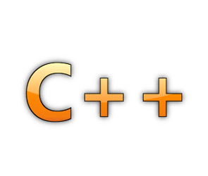

Bienvenue sur mon portfolio.
Je me présente je m'apelle Antoine LEVY j'ai 22 ans.
Je suis actuellement en deuxième année du BTS SIO(Services Informatiques aux Orgarnisations) option SLAM(Solutions Logicielles et Applications Métiers) en alternance voir la brochure : .
Cette formation débuté en septembre 2014 dans la FDME de Massy
Je travail depuis 2014 dans l'entreprise Tredzone dans laquelle j'effectue mon alternance jusqu'à l'été 2016
Très motivé et passionné par le développement je cherche constamment à apprendre de nouvelle chose que ce soit des techniques, des fonctions qui me permettent de gagner du temps, avoir une meilleur maîtrise des langages que j'utilise ou encore l'utilisation de Framework. Pour moi le développement et vraiment quelque chose pour lequel je peux passer beaucoup de temps personnel dans l'apprentissage ou la mise en place de nouvelle chose sans pour le plaisir et dans le but de constamment progresser avec la volonter de toujour vouloir faire plus.
Le travail en entreprise m'a permit de passer de la théorie à l'applicatif rapidement ce qui fait que je dispose d'une certain autonomie dans mon travail.